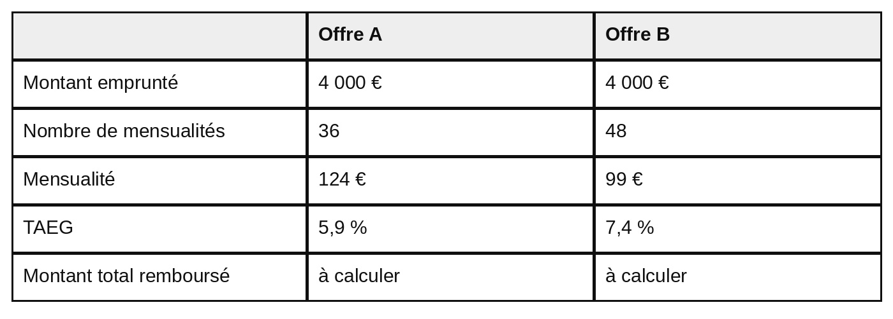
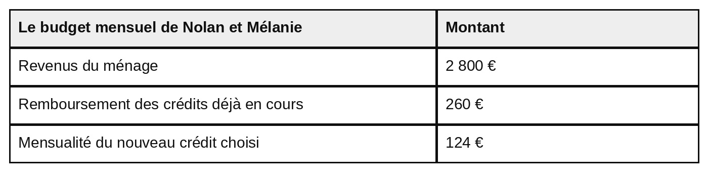

Réglages d’affichage
Modes de paiement et crédit
CAPa 2e année — Sciences économiques, sociales et de gestion — capacité CG1.2
Choisir un moyen de paiement adapté, réagir face à une opération suspecte, et comparer le coût de deux crédits.
Les acquis de ce chapitre
- Choisir un moyen de paiement adapté à une situation.
- Repérer une tentative de fraude et réagir face à une opération non autorisée.
- Calculer le coût d'un crédit et comparer deux offres.
- Mesurer la part des revenus consacrée au remboursement des crédits.
Séance 1
Payer et se protéger
Objectif : Choisir un moyen de paiement adapté à une situation et réagir face à une opération suspecte.
La situation
Nolan achète à un particulier une remorque d'occasion pour 1 400 €. Le vendeur lui transmet son IBAN. Nolan souhaite conserver une trace du paiement sur son compte.
Le même mois, Mélanie reçoit un message sur son téléphone au sujet d'un colis. Elle suit le lien et règle les 1,99 € demandés.
Trois jours plus tard, un débit de 380 € apparaît sur son relevé. Elle n'a pas effectué cette opération, et sa carte est toujours en sa possession.
DOC. 1 — Comparer les moyens de paiement
![Tableau à quatre colonnes : moyen de paiement, une trace apparaît sur le compte, ce qu'il faut pour payer, à savoir. Espèces : pas de trace sur le compte ; billets ou pièces ; paiement à un professionnel limité à 1 000 euros dans le cas général. Carte bancaire : trace sur le compte ; carte ou moyen de paiement associé ; sans contact par carte, généralement jusqu'à 50 euros par opération. Virement : trace sur le compte ; coordonnées bancaires du bénéficiaire, dont l'IBAN ; virement classique généralement reçu sous 24 à 48 heures, virement instantané disponible immédiatement. Chèque : trace après encaissement ; chéquier ; le bénéficiaire peut l'encaisser ultérieurement. Prélèvement : trace sur le compte ; autorisation du titulaire du compte ; adapté notamment aux paiements réguliers.](images/paie_doc1_moyens_paiement.jpg)
Description écrite du document
Tableau à quatre colonnes : moyen de paiement, une trace apparaît sur le compte, ce qu'il faut pour payer, à savoir. Espèces : pas de trace sur le compte ; billets ou pièces ; paiement à un professionnel limité à 1 000 euros dans le cas général. Carte bancaire : trace sur le compte ; carte ou moyen de paiement associé ; sans contact par carte, généralement jusqu'à 50 euros par opération. Virement : trace sur le compte ; coordonnées bancaires du bénéficiaire, dont l'IBAN ; virement classique généralement reçu sous 24 à 48 heures, virement instantané disponible immédiatement. Chèque : trace après encaissement ; chéquier ; le bénéficiaire peut l'encaisser ultérieurement. Prélèvement : trace sur le compte ; autorisation du titulaire du compte ; adapté notamment aux paiements réguliers.
Sources : service-public.gouv.fr et economie.gouv.fr, pages relatives aux moyens de paiement, au plafond des paiements en espèces et au paiement sans contact, consultées en août 2026.
1. À partir du document 1 et de la situation :
Un indice
Deux éléments de la situation orientent le choix : le vendeur a transmis son IBAN, et Nolan veut une trace sur son compte.
Le corrigé
- Moyen : le virement.
- Raison : Nolan dispose de l'IBAN du vendeur, et le virement laisse une trace sur son compte.
Explication
La démarche
Relever ce que Nolan possède et ce qu'il souhaite, puis chercher dans le tableau le moyen qui correspond aux deux.
L’erreur fréquente
Écarter les espèces à cause du plafond de 1 000 €. Ce plafond concerne les paiements à un professionnel : Nolan achète à un particulier.
Un indice
Les deux premières colonnes du tableau permettent la comparaison.
Le corrigé
- La trace sur le compte : le virement en laisse une, les espèces n'en laissent pas.
- Ce qu'il faut pour payer : le virement demande les coordonnées bancaires du bénéficiaire, les espèces demandent des billets ou des pièces.
Explication
La démarche
Lire les deux lignes du tableau, colonne par colonne, et écrire ce qui les distingue.
L’erreur fréquente
Écrire seulement le nom d'un moyen de paiement. La question demande ce qui les distingue sur chaque point.
DOC. 2 — Le message reçu par Mélanie
![Un message reçu sur un téléphone, présenté dans une bulle. Il indique : Colis Express, votre colis n'a pas pu être livré ; frais de dossier à régler, 1 euro 99 ; régularisez sous 24 heures sinon votre colis sera retourné ; suivi d'une adresse internet inhabituelle. L'expéditeur est un numéro de téléphone mobile, le message a été reçu le 12 mars. En dessous, un extrait du relevé de compte de Mélanie : le 12 mars, un paiement par carte de 1 euro 99 au bénéficiaire colis-express-suivi ; le 15 mars, un paiement par carte de 380 euros au bénéficiaire shop-online-ltd ; le 16 mars, un virement de salaire de 1 240 euros. Une note précise que Mélanie n'a pas effectué l'opération du 15 mars et que sa carte est toujours en sa possession.](images/paie_doc2_message_frauduleux.jpg)
Description écrite du document
Un message reçu sur un téléphone, présenté dans une bulle. Il indique : Colis Express, votre colis n'a pas pu être livré ; frais de dossier à régler, 1 euro 99 ; régularisez sous 24 heures sinon votre colis sera retourné ; suivi d'une adresse internet inhabituelle. L'expéditeur est un numéro de téléphone mobile, le message a été reçu le 12 mars. En dessous, un extrait du relevé de compte de Mélanie : le 12 mars, un paiement par carte de 1 euro 99 au bénéficiaire colis-express-suivi ; le 15 mars, un paiement par carte de 380 euros au bénéficiaire shop-online-ltd ; le 16 mars, un virement de salaire de 1 240 euros. Une note précise que Mélanie n'a pas effectué l'opération du 15 mars et que sa carte est toujours en sa possession.
Document fictif construit pour le cours.
2. À partir du document 2 :
Un indice
Observer ce que le message demande, le délai qu'il impose et l'adresse internet qu'il propose.
Le corrigé
- Trois éléments parmi : l'urgence imposée, régulariser sous 24 heures ; l'adresse internet inhabituelle ; la demande de paiement par carte ; les fautes d'orthographe et d'accentuation ; l'expéditeur est un simple numéro de téléphone mobile.
Explication
La démarche
Passer en revue le message ligne par ligne et repérer ce qui ne correspond pas à un message officiel.
L’erreur fréquente
Relever le nom du transporteur. Ce n'est pas le nom qui est suspect, c'est la façon dont le message est écrit et ce qu'il demande.
Un indice
Comparer ce que représente 1,99 € et ce que le relevé montre trois jours plus tard.
Le corrigé
- Un montant de 1,99 € paraît trop faible pour représenter un risque. La personne accepte de le payer sans se méfier. Mais en payant, elle communique les coordonnées de sa carte, qui servent ensuite à un débit bien plus important.
Explication
La démarche
Le montant demandé n'est pas ce qui est volé : ce qui est volé, ce sont les coordonnées de la carte, qui servent ensuite à autre chose.
L’erreur fréquente
Répondre « parce que ce n'est pas cher ». Il faut dire ce que ce faible montant permet d'obtenir : les coordonnées bancaires.
Un indice
La règle est de ne jamais passer par le lien du message lui-même.
Le corrigé
- Ne pas utiliser directement le lien du message.
- Ouvrir soi-même le site ou l'application officielle de l'organisme pour vérifier la demande.
Explication
La démarche
Un message peut imiter un organisme connu. Le seul moyen de vérifier est de passer par le site ou l'application que l'on ouvre soi-même.
L’erreur fréquente
Répondre « vérifier que le site a l'air sérieux ». L'apparence d'un site se copie facilement.
Un indice
Une première démarche arrête les prélèvements à venir, une deuxième permet d'obtenir le remboursement, une troisième signale la fraude.
Le corrigé
- 1. Faire opposition auprès de sa banque.
- 2. Contester l'opération auprès de la banque.
- 3. Signaler la fraude sur la plateforme Perceval et conserver les preuves.
Explication
La démarche
L'opposition arrête les fraudes à venir. La contestation permet d'obtenir le remboursement du débit déjà passé. Le signalement délivre un récépissé à transmettre à la banque.
L’erreur fréquente
S'arrêter à l'opposition. L'opposition arrête les fraudes futures, mais elle ne rembourse pas le débit déjà passé : il faut contester l'opération.
À retenir
Avant de payer, on choisit le moyen adapté à la situation. Devant un message qui demande un paiement ou des coordonnées bancaires, on n'utilise jamais le lien reçu : on ouvre soi-même le site officiel. Après un débit non autorisé, faire opposition ne suffit pas : il faut aussi contester l'opération auprès de sa banque.
Le lexique de la séance 1
- IBAN
- Numéro qui identifie un compte bancaire et permet de recevoir un virement.
- Opposition
- Démarche qui bloque une carte bancaire et arrête les paiements à venir.
- Contestation
- Démarche auprès de la banque pour obtenir le remboursement d'une opération non autorisée.
- Perceval
- Plateforme officielle de signalement des fraudes à la carte bancaire.
Auto-évaluation de la séance 1
1. Faire opposition suffit à obtenir le remboursement d'un débit non autorisé. Répondre en cochant une case.
Le corrigé. Faux
Explication. L'opposition arrête les fraudes à venir ; il faut ensuite contester l'opération.
2. Indiquer ce qu'il faut faire avant d'utiliser un lien reçu par message, en cochant une seule case.
Le corrigé. Ouvrir soi-même le site officiel de l'organisme
Explication. L'apparence d'un site se copie facilement.
3. Indiquer ce qu'il faut pour effectuer un virement à quelqu'un. Répondre en rédigeant une phrase.
Le corrigé. Les coordonnées bancaires du bénéficiaire, dont l'IBAN.
Explication. C'est ce qu'indique la troisième ligne du document 1.
Score : —
Séance 2
Comparer un crédit et mesurer sa charge
Objectif : Comparer le coût de deux crédits et mesurer l'effet d'une mensualité sur un budget.
La situation
Nolan et Mélanie souhaitent acheter un véhicule d'occasion à 4 000 €. Ils n'ont pas cette somme de côté.
Deux organismes leur proposent un crédit. Les mensualités et les durées ne sont pas les mêmes.
Mélanie signe l'offre le 4 septembre. Le 10 septembre, elle change d'avis.
DOC. 3 — Ce qu'il faut savoir avant de signer
Un crédit permet de disposer immédiatement d'une somme, mais il engage des remboursements futurs et il a un coût.
Le TAEG, taux annuel effectif global, est un pourcentage qui prend en compte les intérêts et les frais obligatoires liés au crédit. Il sert à comparer le coût de plusieurs offres de crédit.
Le coût du crédit, en euros, correspond à la différence entre le montant total remboursé et la somme empruntée.
Après la signature, il reste 14 jours calendaires pour renoncer au crédit, sans avoir à se justifier.
Sources : service-public.gouv.fr, pages « Qu'est-ce que le taux annuel effectif global ? » et « Crédit à la consommation : règles du contrat », consultées en août 2026.
DOC. 4 — Les deux offres reçues

Description écrite du document
Tableau comparant deux offres de crédit. Offre A : montant emprunté 4 000 euros, 36 mensualités, mensualité de 124 euros, TAEG de 5,9 pour cent, montant total remboursé à calculer. Offre B : montant emprunté 4 000 euros, 48 mensualités, mensualité de 99 euros, TAEG de 7,4 pour cent, montant total remboursé à calculer.
Document fictif construit pour le cours.
1. À partir des documents 3 et 4 :
150 × 24 = 3 600.
Le montant total remboursé est de 3 600 €.
Un indice
Multiplier la mensualité par le nombre de mensualités.
Le corrigé
- 124 × 36 = 4 464.
- Le montant total remboursé pour l'offre A est de 4 464 €.
Explication
La démarche
Multiplier la mensualité par le nombre de mensualités.
L’erreur fréquente
Additionner la mensualité et le montant emprunté. Le montant total remboursé se calcule à partir des mensualités.
Un indice
Le document 3 dit comment se calcule le coût du crédit.
Le corrigé
- 4 464 − 4 000 = 464.
- Le coût du crédit A est de 464 €.
Explication
La démarche
Retirer la somme empruntée au montant total remboursé, comme l'indique le document 3.
L’erreur fréquente
Confondre le coût du crédit avec le TAEG. Le coût s'exprime en euros, le TAEG en pourcentage.
Un indice
Deux étapes : le montant total remboursé, puis le coût du crédit.
Le corrigé
- 99 × 48 = 4 752.
- 4 752 − 4 000 = 752.
- Le coût du crédit B est de 752 €.
Explication
La démarche
Calculer d'abord le montant total remboursé, puis retirer la somme empruntée.
L’erreur fréquente
Oublier la première étape. Il faut calculer le montant total remboursé avant de pouvoir retirer les 4 000 €.
Un indice
Comparer les deux coûts calculés, puis les deux TAEG du document 4.
Le corrigé
- L'offre B a une mensualité plus basse, 99 € contre 124 €, mais elle coûte 288 € de plus : 752 € contre 464 €. Son TAEG est aussi plus élevé, 7,4 % contre 5,9 %. Une mensualité plus faible ne signifie donc pas que le crédit est moins cher.
Explication
La démarche
Mettre côte à côte les deux coûts en euros, puis les deux TAEG. Les deux indicateurs vont dans le même sens.
L’erreur fréquente
Conclure que l'offre B est plus intéressante parce que la mensualité est plus basse. Elle est étalée sur plus longtemps, et elle coûte davantage.
Un indice
Le dernier paragraphe du document 3 donne le délai. Compter les jours écoulés depuis la signature.
Le corrigé
- Réponse : oui.
- Raison : six jours se sont écoulés depuis la signature du 4 septembre, et le délai de rétractation est de 14 jours calendaires.
Explication
La démarche
Compter les jours écoulés entre la signature et le changement d'avis, puis comparer au délai du document 3.
L’erreur fréquente
Répondre non en pensant qu'une signature est définitive. Le document 3 prévoit un délai pour renoncer, sans avoir à se justifier.
DOC. 5 — Le budget mensuel de Nolan et Mélanie

Description écrite du document
Tableau du budget mensuel de Nolan et Mélanie. Revenus du ménage : 2 800 euros. Remboursement des crédits déjà en cours : 260 euros. Mensualité du nouveau crédit choisi : 124 euros.
Cette part indique quelle proportion des revenus est déjà utilisée pour rembourser des crédits. Plus elle augmente, moins il reste d'argent pour les autres dépenses.
Document fictif construit pour le cours.
2. À partir du document 5 :
200 ÷ 2 000 × 100 = 10.
La part consacrée aux crédits est de 10 %.
Un indice
Additionner d'abord les deux mensualités, puis diviser par les revenus et multiplier par 100.
Le corrigé
- 260 + 124 = 384 € de remboursements par mois.
- 384 ÷ 2 800 × 100 = 13,7.
- Environ 14 % des revenus mensuels sont consacrés au remboursement des crédits.
Explication
La démarche
Additionner les crédits en cours et la nouvelle mensualité, puis diviser par les revenus et multiplier par 100.
L’erreur fréquente
Oublier les crédits déjà en cours. Le calcul porte sur l'ensemble des remboursements, pas seulement sur le nouveau crédit.
À retenir
Un crédit permet de disposer immédiatement d'une somme, mais il engage des remboursements futurs et il a un coût. Avant de souscrire, il faut comparer les offres à partir du coût du crédit et du TAEG, et vérifier la place que la mensualité prendra dans son budget.
Le lexique de la séance 2
- TAEG
- Pourcentage qui prend en compte les intérêts et les frais obligatoires d'un crédit, et qui sert à comparer les offres.
- Coût du crédit
- Différence, en euros, entre le montant total remboursé et la somme empruntée.
- Mensualité
- Somme remboursée chaque mois.
- Rétractation
- Possibilité de renoncer à un crédit dans les 14 jours calendaires qui suivent la signature.
Auto-évaluation de la séance 2
1. Une mensualité plus basse signifie toujours que le crédit coûte moins cher. Répondre en cochant une case.
Le corrigé. Faux
Explication. L'offre B a la mensualité la plus basse et coûte 288 € de plus.
2. Indiquer en quoi s'exprime le TAEG, en cochant une seule case.
Le corrigé. En pourcentage
Explication. Le coût du crédit, lui, s'exprime en euros.
3. Indiquer le délai pour renoncer à un crédit après la signature. Répondre en rédigeant une phrase.
Le corrigé. 14 jours calendaires à partir de la signature.
Explication. Sans avoir à se justifier.
Score : —